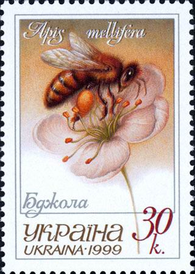
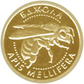
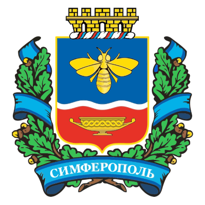
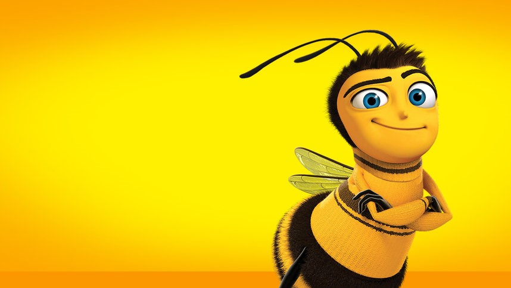

БДЖIЛКО-СТАЙЛ
Бен Бджолян
Я - Українська Бджола!
Сильний, сміливий, гарненький, кмітливий, чуйний та дуже веселий!
Маю безліч нагород за найбільшу кількість зібраного меду!
Сильний, люблю будувати домівки та збирати мед!
Мої нагороди:
  
